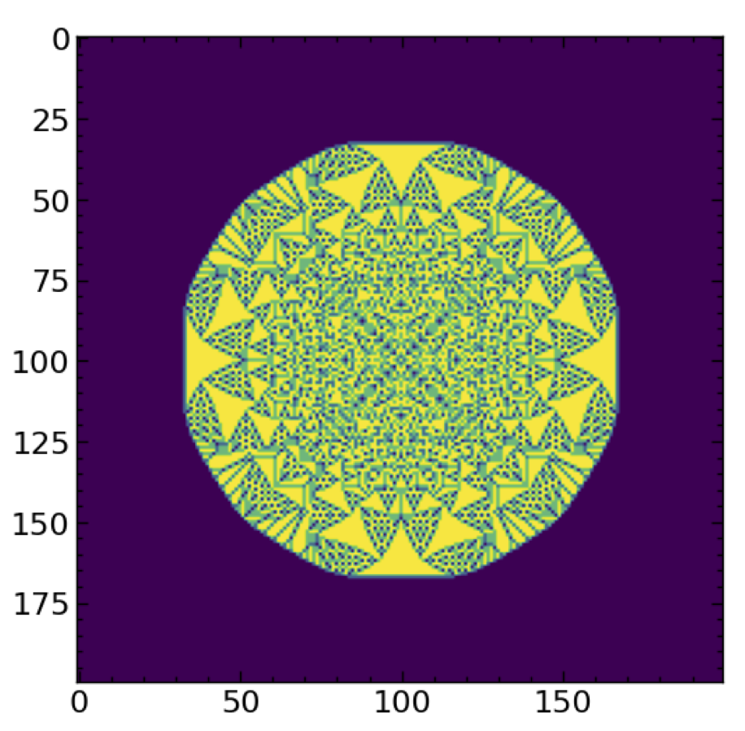

Sand#
Extra Credit
This page is 20 points extra credit
On this page you will simulate a model of sand building up on a table (and the resulting avalanches that it causes).
In this model, sand will be placed on a table which has \(N \times N\) spaces for granules of sand. The granules of sand can be stacked up into columns. Once a column becomes larger then or equal to \(k\) granules high, 4 granules of sand slide off the pile with one granule ending up on each of the four neighbors. If the column of sand is on the edge of the table without four neighbors it still ends up with 4 less pieces of sand; the extra sand just falls off the table.
For the first part of this problem, we are going to have sand rain from the sky onto random spots on the table.
This gives us essentially a cellular automata with four rules:
Choose a random spot on the table and add a new piece of sand
While some column of sand has \(\geq k\) pieces:
choose a random such column and replace it with \(k-4\) pieces of sand and increase the sand on each of its neighbors by one.
This is not only a cellular automata but also a markov chain (the probability of a new configuration is independent of anything but the current configuration).
Write a simulation which performs this cellular automata. Use \(N=25\) and \(k=4\).
Grading
Measure the following two properties using a window averaging of 100 steps:
the number of pieces of sand as a function of time.
the size (number of columns of sand involved) of each avalanch as a function of time.
a snapshot of the sand in equilibrium (i.e. after 1000 steps).
You should get results that look something like this:

Grading
Also choose a single prototype avalanch (preferably a large one) and visualize it.
You should see something like this

(it would be fun to turn this into a video - it shouldn’t be too hard if you look up how animations work in pylab)
The number of avalanches actually follow a power law - i.e. the probability of an avalanch goes as \(s^{-b}\) where \(s\) is the size (number of columns of sand which avalanch) of the avalanch. You should attempt to figure out the exponent \(b\). The trick to do this is to look at the size \(s\) versus the number of such avalanches on a log-log plot. The slope will be \(-b\).
My graph looks like this:

I should have labelled these axis as log(# of avalanches of a given size) vs log(size - i.e. # of columns of sand involved in avalanch)
Grading
Produce this plot and compute \(b\)
Another interesting thing to do with this automata is, instead of having sand rain from the sky, just start with a large lattice (say 200x200) with an extremely tall pile of grains on the center pixel (say 32,767 grains) and just let the avalanches happen. You will reach a fixed point.
Grading
Visualize this plot. It should look something like this:’

Not graded but You can also go ahead and do a sand-pile model for 1-dimension instead of 2-dimensions. In many ways this is easier to visualize.